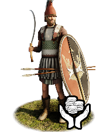
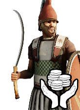

RTR: Imperium Surrectum
RTR: Imperium SurrectumMercenary Karian Thureophoroi


Mercenary. Hired from a regional pool, not recruited from a building.
Class: light · Category: infantry · Men per unit: 40
Description
A long time ago, the Carians invented shield handles and paintings on shields. Now, most soldiers across the Hellenistic world use both, but the types of shields have evolved. The big, oval shield popular among Celts, Illyrians, and Italics known as the thyreos or thureos has also found its way into Caria. Sticking to their traditions, the natives wonderfully paint these shields with symbols such as the labrys, the sacred Carian double-headed axe, or the laureate head of the Labraundian or the Chrysaorian Zeus. Also typical for the Carians are the multitude of crested helmets, of the Phrygian or Sidon type. While some of these Thureophoroi only wear an exomis, others have been able to afford a linothorax. Red colours dominate, because that colour is often made from hematite, a mineral prevalent in Caria. These men use javelins to attack the enemy from afar, but rely on another classically Carian weapon in melee: the drepanon, a sword so curved it rather resembles a scythe. Altogether, they are multi-purpose infantry that is especially useful when combined with cavalry or heavy infantry.
Historical background
"Let the risk be for the Carian, as the proverb has it, and not for the general." – Polybios (10.32.11)
Carian soldiers were famous mercenaries. This quote from the Histories of Polybios of Megalopolis, the Achaian statesman, cavalry commander, and historian (ca. 200-118 BC) illustrates just that. The Carians were famously brave, but also expendable, and are already mentioned as paid soldiers in Judah in the old testament (2 Kings 11.4). Since many Carians served as mercenaries abroad throughout the centuries, they also carried military innovations to new lands and brought them back when returning home. The historian Herodotus of Halikarnassos (ca. 485-425 BC), himself half-Carian (Weaver, Marginalised Populations in the Ancient Greek World (2022), p. 192), ascribed the invention of shield handles, devices on shields, and crests on helmets to the Carians (Hdt. 1.171.4). He obviously referred to a period before the Peloponnesian War (431-404 BC), perhaps even before the Greco-Persian Wars (490-479 BC). But Carians remained in demand as mercenaries throughout the Hellenistic period. Various Carians in foreign service are attested in Elis (SEG 15:242), Boiotia (IG 7.2433), in Antigonid garrisons (Liv. 33.18.9) and, of course, in Egypt.
In Memphis, a whole Carian neighbourhood had existed since the time of pharaoh Psammetichos I (r. ca. 660-610 BC) or Psammetichos II (ca. 595-589 BC) (Adiego Lajara, The Carian Language (2007), pp. 30-31). It still thrived under the Ptolemies. In the 3rd century BC, the priests of the West Semitic goddess Astarte in Memphis complained to Zenon of Kaunos, the local secretary (himself a Carian: PCairZen_59056) that the Carian temple in the city was receiving much higher rations of oil (PSI V 531; Renberg and Bubelis, ‘The Epistolary Rhetoric of Zoilos of Aspendos’, in: ZPE 177 (2011), pp. 169-200). The sanctuary was probably the temple of the Carian Zeus, the Labraundian Zeus, which possessed 120 arouras of land outside Memphis (P.Mich.Zenon 1.31). Its existence demonstrates that the Carian soldiers and their families had retained much of their identity as Carians even after all this time had passed (Fitzpatrick-McKinley, ‘Preserving the Cult of YHWH in Judaean Garrisons’, in: Baden, Sibyls, Scriptures, and Scrolls (2016), p. 386). Since one aroura corresponds to ⅔ of an acre (Hdt. 2.168), the Labraundian Zeus had been awarded 32ha of land – an area similar to the largest farms known in Greece (Taylor, ‘Economic (In)Equality and Democracy’, in: Ancient Greek History and Contemporary Social Science (2018), p. 356 & fig. 12.3). The Carians were not just any settlers – they were respected and rewarded for their loyalty.
Accordingly, it is no surprise that Carians remained being agents of military and cultural exchange. Thureos shields became widespread in Caria and wider western and southern Anatolia during the 3rd century BC (Liv. 43.6.6; Bienkowski, Celtes (1928), Fig. 192; Webb, Hellenistic Architectural Sculpture (1996), p. 58). Even though the shield type had been in use in Italy and Illyria for a long time by then (see the various unit descriptions for the respective units), it took the Galatian invasion to bring this shield to Asia Minor (Van Oppen de Ruiter, Berenice II Euergetis (2016), p. IX). Our Thureophoroi combine this shield with a uniquely southwestern Anatolian weapon: the drepanon (pl. drepana). This sickle-like sword was especially popular in Caria and very effective at cutting body parts of both humans or horses (Hdt. 5.112.2, 7.93). The many plumed or crested helmets are based on the local traditions mentioned above, but the stele of Stomphias, son of Apollodides, from Euromos near Mylasa may have also shown one. Since he was a mercenary in the Ptolemaic garrison at Sidon, the Sidon helmets are a natural additional choice for this unit (Jalabert, Nouvelles Stèles Peintes de Sidon (1904), fig. 1).
Apollodides also wore a javelin or other kind of spear, which fits the equipment of Thureophoroi, and a blood-red tunic with darker pleats. The red colour would have been made from Hematite, which was available in great quantities in ancient Caria (Tüfekçi et al., Archaeometric Studies on Bricks from the Stratonikeia Ancient City in Caria (2024), pp. 130-132). Lastly, the linothorax and the Phrygian helmet were used in Caria before they became popular in Greece, and thus also very familiar items on the battlefields of this part of the ancient world (Brouwers, The Anatolian Roots of Archaic Greek Warfare, in: Kucewicz, Lloyd, and Konijnendijk, Brill’s Companion to Greek Land Warfare beyond the Phalanx (2021), pp. 70-71). These Thureophoroi represent, therefore, a natural evolution of Carian warfare.
Stats
| Rank in roster | Rank in roster | Rank in roster | Rank in roster | ||||||||
|---|---|---|---|---|---|---|---|---|---|---|---|
| Men per unit | 40 | ███······· 28% | Attack | 13 | ██████···· 62% | Charge bonus | 10 | ████······ 35% | Defence | 30 | ████······ 44% |
| · armour | 7 | ████······ 42% | · defence skill | 18 | ████······ 38% | · shield | 5 | ██████···· 58% | Morale | 11 | ████······ 40% |
| Discipline | normal | Training | trained | Recruitment cost | 2,493 dn | ███████··· 70% | Upkeep per turn | 608 dn | ████······ 44% | ||
| Turns to recruit | 2 |
Weapons
| Primary | Secondary | Primary | Secondary | Primary | Secondary | Primary | Secondary | ||||
|---|---|---|---|---|---|---|---|---|---|---|---|
| Attack | 13 | 7 | Charge bonus | 10 | 11 | Type | thrown · blade | melee · blade | Damage | piercing | slashing |
| Projectile | javelin | — | Range | 50 | — | Ammunition | 2 | — | Attributes | prec | ap |
| Min delay between blows | 25 | 25 |
Defence
| Primary | Secondary | Primary | Secondary | Primary | Secondary | Primary | Secondary | ||||
|---|---|---|---|---|---|---|---|---|---|---|---|
| Total | 30 | — | Armour | 7 | — | Defence skill | 18 | — | Shield | 5 | — |
| Material | leather | — |
Condition, terrain and upkeep
| Hit points | 1 · mount 6 | Ground: scrub / sand / forest / snow | 0 / -1 / 0 / -1 | Heat penalty | 0 | Charge distance | 30 |
| Fire delay | 0 | Food consumed (low / high) | 60 / 300 | Mass per man | 1.05 | Formation: close / loose | 1 x 1.2 / 2 x 2.4 · 5 ranks · square |
| Men per unit | 40 as the unit file states — the game multiplies this by your unit size |
In battle: Can sap · Very good stamina
The full attribute list (5)
sea_faring, hide_forest, can_sap, mercenary_unit, very_hardy
Where to hire it
This unit is defined as a mercenary but no mercenary pool anywhere on the map offers it, so there is nowhere on the campaign map to hire it as the mod ships today.